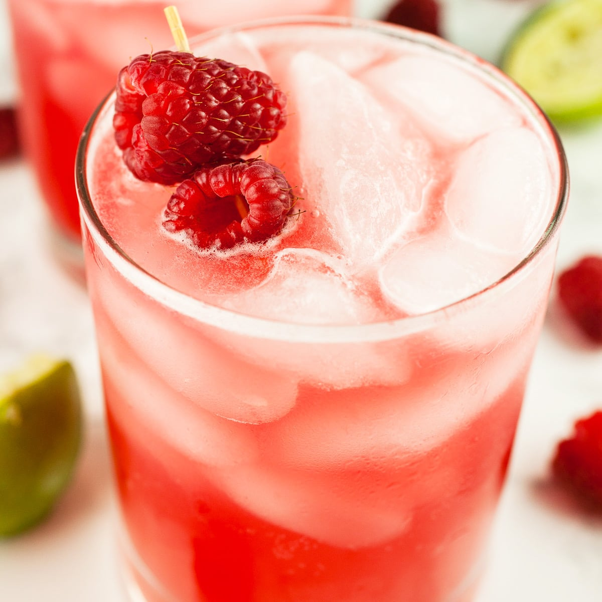

Raspberry Mule

Refreshing raspberry mule
A raspberry mule is a perfect drink for summer or for a festive occasion!
A sweet twist to the classic mule, this cocktail has the refreshing ginger beer paired with raspberry for a sweet flavor.
Ingredients
- Ginger beer
- Raspberry juice (can substitute cranberry juice or any juice you like)
Steps
- Pour half ginger beer and half juice into a cup
- Add ice and serve!